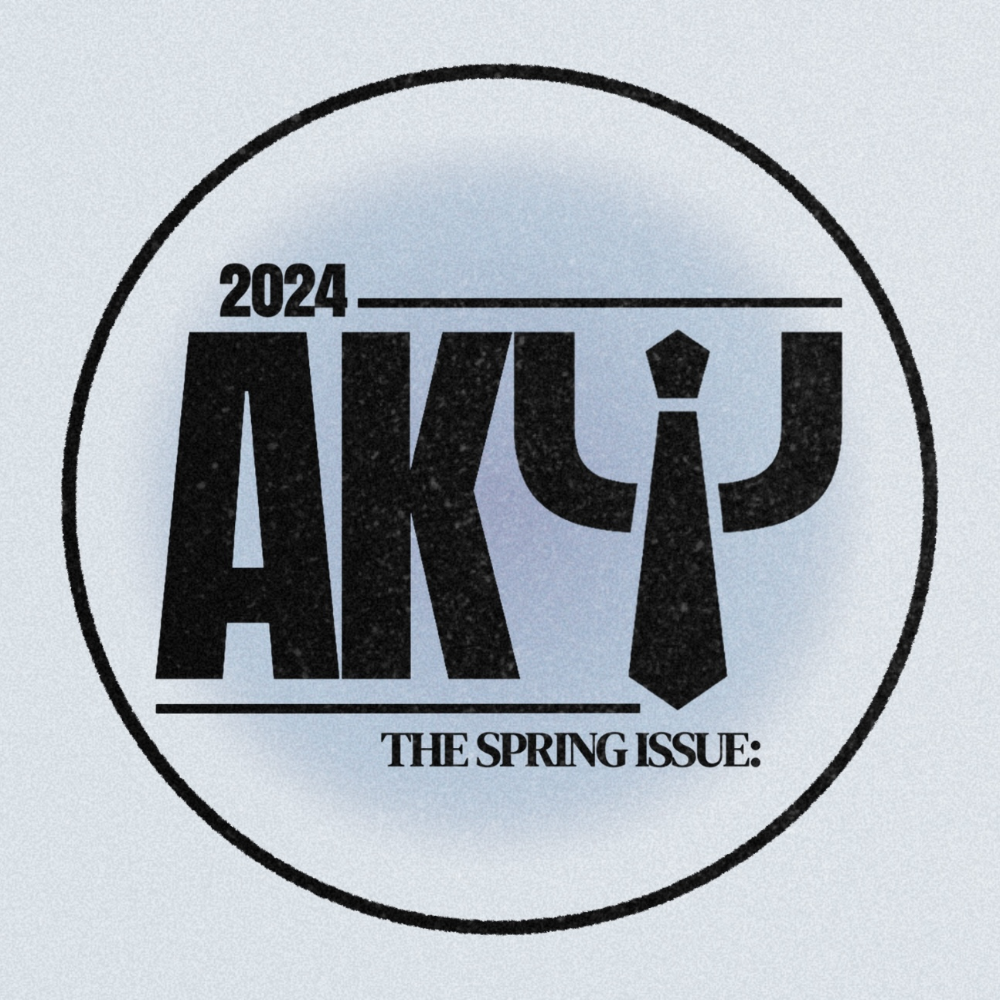
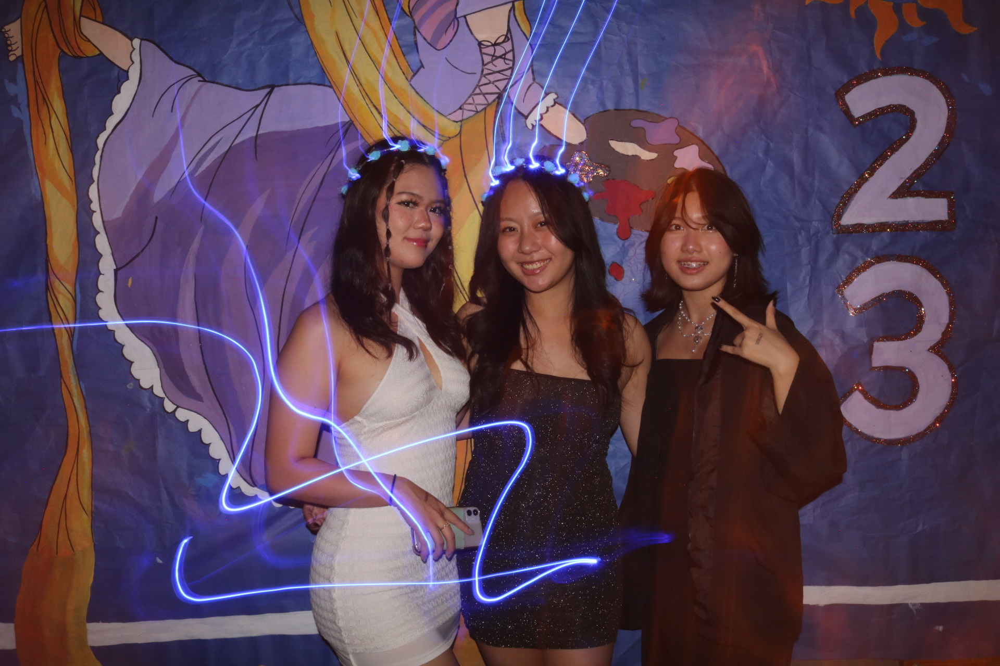

Calvin Truong
Hello! My name is Calvin Truong and I am a student at the University of California-Riverside
I am a tenacious go-getter with a passion for anything creative, from photography to videography, editing, graphic design, or social media marketing, I am an aspiring creative with a long term professional goal of becoming a creative director. Being a creative person has allowed me to view the world in colors and lines and shapes and garner a divine understanding of beauty and aesthetics.
I am an active member of many different organizations here on campus, the most prominent being the Vietnamese Student Association and Alpha Kappa Psi, the world's oldest and largest premier co-ed business fraternity. In high school, I was a member of Key CLub Division 10 South, I assisted in the organization and execution as well as participated in 40+ volunteer events that resulted in the accumulation of 150+ community service hours that cultivated skills in, but not limited to, food service, environmental consciousness, community building, and project management.
I served as liaison between ten school Key Club chapters under the Division board, actively working to improve communication within the club as a whole
I assisted in organization of Fall Rally South 2022, the largest event of the year with member participation across California, Nevada, and Hawai’i. I created graphic communications in the form of monthly newsletters to be distributed through the official Division social media platform, reaching an audience of 1000+ readers. I was also selected out of 400+ students to be the 2023 Jostens Class Ambassador,
where I created multiple short-form videos and graphic communications to push the sales of caps and gowns for Graduation as well as other Graduation merchandise.
I served as student consultant on all topics related to Graduation and kept close relations with San Gabriel High School’s partner Graduation distribution company, Jostens.
I also assisted in the distribution of caps and gowns to a 400+ student body.
As an active member of the UCR community, I immersed myself in various facets of campus life. From engaging in dynamic student organizations to taking on leadership roles, I dedicated myself to creating a positive impact. My journey included spearheading initiatives that fostered a sense of belonging, cultural appreciation, and inclusivity, contributing to the rich tapestry of UCR's diverse community.
My commitment to academic excellence was unwavering, and I successfully balanced my studies with a passion for learning beyond the classroom. Collaborating with professors and fellow students, I embraced the challenges of coursework and sought out opportunities for personal and intellectual growth.
Beyond academics, my Highlander experience extended to community service and outreach, where I actively participated in programs that aimed to make a positive difference in both the UCR and local communities. These experiences instilled in me a sense of social responsibility and a deep appreciation for the power of collective action.
One of the most rewarding aspects of being a Highlander was the opportunity to contribute to the university's inclusive atmosphere. Whether participating in cultural events, collaborating on projects, or engaging in open dialogues, I played a role in fostering an environment where diverse perspectives were not only respected but celebrated.
Experience
Freelance Ambassador
• Promoted Company product Launches
• Distributed Product
• Experience in User Generated Content creation
Key Club
• Created monthly newsletter
• Organized events
• Oversaw Multiple Key Clubs
• Ran community service events
Education
UC Riverside
Portfolio

